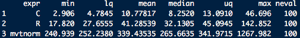

I'm an Rcpp Believer
I didn't know.
I needed to draw from the multivariate normal distribution in R. I did what anyone in that situation would: I searched for an existing package that already had the functionality.
I heard snippets here and there from other graduate students. "R is inefficient." "Memory allocation is expensive." "You should just use C++." I didn't listen.
My MCMC sampler required me to make dozens of draws from the multivariate normal distribution. It was slow, but I suffered in silence. Better that than learn a new language, I told myself. The time that would take is much more than the time to just sit while the sampler ran.
Finally, while waiting days for a batch of tests to run, I peeked. I took a look at Hadley's chapter in Advanced R about Rcpp. It took a few days to figure out, days when my MCMC sampler continued to run. I couldn't believe the results.
I was a fool. I was able to code portions of my MCMC in C++ easily using Rcpp Sugar. My sampling from the multivariate normal distribution became more efficient by a factor of 10. Life is better now. More vibrant. I can only hope to convince others in my position that the learning curve is not too steep, and that the payoff is worth it.
C++ Code
#include <RcppArmadillo.h>
// [[Rcpp::depends(RcppArmadillo)]]
// Sample N x P observations from a Standard
// Multivariate Normal given N observations, a
// vector of P means, and a P x P covmatrix
// [[Rcpp::export]]
arma::mat rmvnorm(int n,
const arma::vec& mu,
const arma::mat& Sigma) {
unsigned int p = Sigma.n_cols;
// First draw N x P values from a N(0,1)
Rcpp::NumericVector draw = Rcpp::rnorm(n*p);
// Instantiate an Armadillo matrix with the
// drawn values using advanced constructor
// to reuse allocated memory
arma::mat Z = arma::mat(draw.begin(), n, p,
false, true);
// Simpler, less performant alternative
// arma::mat Z = Rcpp::as<arma::mat>(draw);
// Generate a sample from the Transformed
// Multivariate Normal
arma::mat Y = arma::repmat(mu, 1, n).t() +
Z * arma::chol(Sigma);
return Y; }R Code
my_rmvnorm <- function(n,mu,sigma){
p = ncol(sigma)
draw = rnorm(n*p)
z = matrix(draw,n,p)
y = (matrix(rep(mu,n),n)) + z %*% chol(sigma)
return(y)}
print(summary(microbenchmark(C = rmvnorm(1,a_mean,a_cov),
R = my_rmvnorm(1,a_mean,a_cov),
mvtnorm = mvtnorm::rmvnorm(1,a_mean,a_cov))))Results
